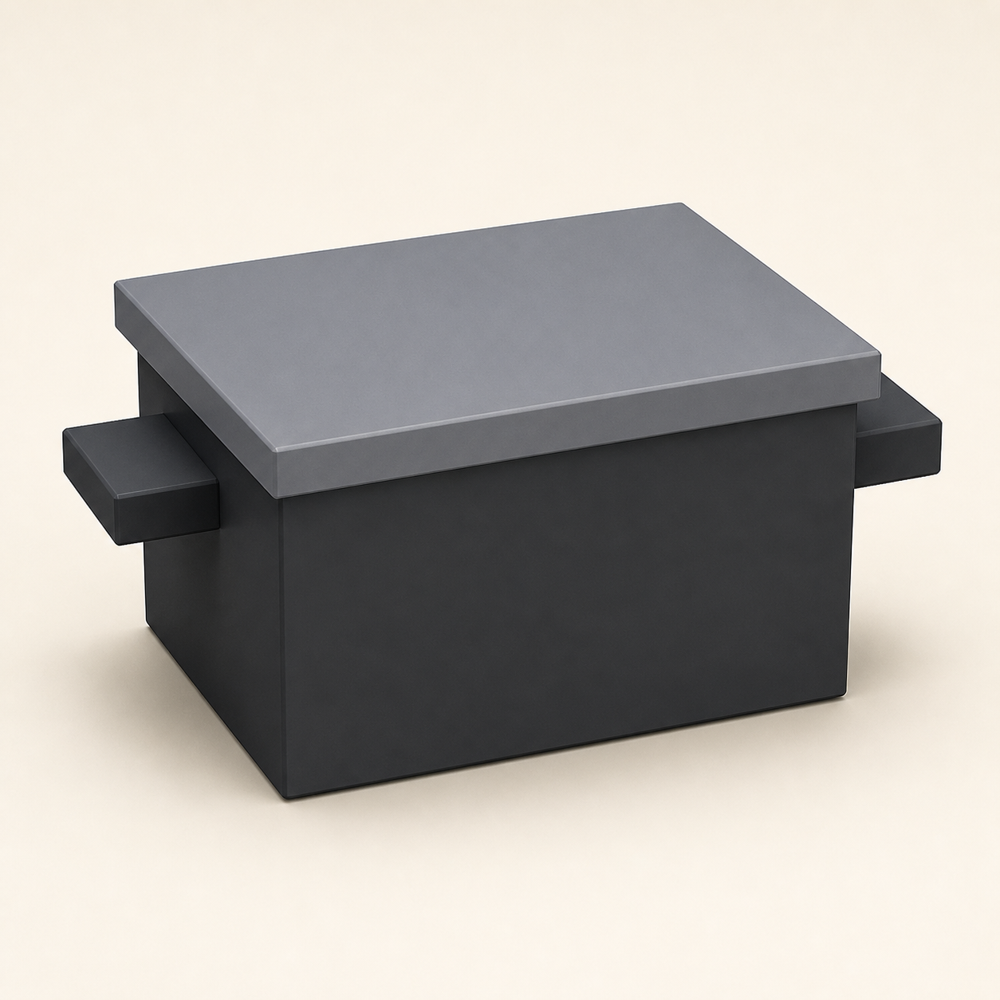

Day 3 — Week 1: Foundations
03A cooking pot — duplicate for free symmetry
The most iconic Overcooked object of all. Build it once — then learn the move that makes the second handle appear in a single click, perfectly matched.
A little cooking pot with two matching handles — the signature Overcooked prop — and your Day-3 devlog posted. You'll also pocket a tool you'll reuse on almost everything from here: Duplicate.
Warm up — 30-second recall
Say each answer out loud from memory before opening it. Yesterday's material plus Lesson 1 — mixing old and new is what makes it stick.
Where do you name your cubes, and why?
Cube, Cube2, Cube3…One key flips between the Move and Resize tools — which?
What turns separate props into a sellable "set"?
The one new idea — Duplicate
Many props are symmetrical: a pot has two handles, a chef has two arms, a counter has repeating panels. Re-building each half by hand is slow and the two halves never quite match. The fix is Duplicate — make one part perfectly, then copy it.
The version-proof way: right-click the cube (in the Outliner or the viewport) and choose Duplicate — it also lives in the Edit menu. The copy lands selected and sitting right on top of the original, so your very next move is to slide it to its new home with the Move tool. [Blockbench Wiki — tools & menus]
Blockbench shows the keyboard shortcut for Duplicate right next to it in the menu (often Ctrl+D). Hover the action to see your build's binding — that habit works for any command, no memorizing required. [Wiki — keybindings]

Do it with me
Same core loop as before (add cube → shape → name → color). The only new step is 4. Keep the Cheat Sheet open.
-
New Generic Model → name it
File → New → Generic Model. Fresh grid, like always.cooking-pot -
Body: a chunky box (cube #1)
Add a cube and give it a Size aroundWidth 9 · Height 7 · Depth 9— a little taller than wide, sitting on the grid floor. Name itbodyin the Outliner. This squat box already reads as a pot. -
Rim: a thin overhanging lid-edge (cube #2)
Add a cube, make it a flat slab a touch wider than the body —Width 10 · Height 1 · Depth 10— and Move it to sit on top, overhanging slightly on every side. That little lip is what makes a plain box look like a real pot. Name itrim. -
One handle (cube #3)
Add a cube, make a small bar — aboutWidth 2 · Height 1.2 · Depth 4— and Move it so it sticks out from one side of the body, near the top. Name ithandle-l. Get this one looking right; the next step copies it exactly. -
⭐ The new move: Duplicate the handle
Right-clickhandle-l→ Duplicate (or use the Edit menu). A second handle appears, selected, sitting on top of the first. With the Move tool (Space), slide it straight across to the opposite side of the body. Rename the copyhandle-r. Two identical handles, perfectly matched — and you never rebuilt a thing. That's the whole point of Duplicate. -
Color it (your Lesson-1 loop)
Create a texture (16 × 16), switch to Paint mode, and fill faces:- body + rim + both handles → a dark steel grey.
- Want a pop of Overcooked color? Paint the body a red or teal enamel and keep the rim grey — that's a classic stylized-kitchen look.
-
Stretch (optional): a bowl of soup
Add one more cube, sized to drop just inside the rim, and paint it bright orange or yellow — now it's a pot of soup. Pure Lesson-2 practice, and far cuter to post. -
Frame a 3/4 shot & capture it
Orbit to the slightly-looking-down corner angle so both handles read, and screenshot. Then put the pot, crate, and chopping board in one shot — your first three-piece set photo. -
Post your Day-3 devlog
Same project page. Screenshot + a caption from below. Streak: Day 3. Then File → Save your.bbmodel.
itch.io devlog (English):
RedNote / 小红书 (中文):
Quick self-check
From memory first — today's new material matters most here.
Two ways to Duplicate a cube — name them.
Right after duplicating, where is the copy — and what's your next move?
What one detail makes a plain box read as a pot?
Why duplicate the handle instead of building a second one?
Watch a low-poly object get modeled and given a pixel texture, beginner-friendly and end-to-end: "How to Make Low-Poly Models with Pixel Texture" (Blockbench). Watch for moments where parts get copied rather than rebuilt — that's today's idea in action.
Duplicate isn't just for handles — it's the seed of modular pieces (repeating counter and floor tiles) in Week 4, and the two arms of your chef in Week 3. You just learned a move you'll lean on for the rest of the pack.
Handle landing in the wrong spot? Rim not overhanging evenly? Pot looks more like a bucket? Tell me, or drop a screenshot and I'll react on proportions and framing. Bring back your pot and I'll set up Lesson 4 in your zone — likely a plate or mug, or our first proper look at rotating a cube for angles.